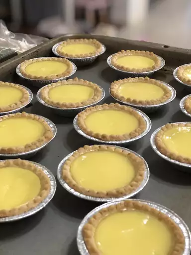

Egg Tarts
Egg tarts are a delicious dessert.
Home

Ingredients
- 1½ cups water
- ¾ cup white sugar
- 4 large egg
- ¼ cup evaporated milk
- 24(3-inch) unbaked tart shells
Steps
- Preheat the oven to 425 degrees F (220 degrees C).
- Combine water and sugar in a saucepan and bring to a boil. Cook until sugar dissolves. Remove from heat and cool to room temperature.
- Beat eggs in a large bowl. Add evaporated milk and continue beating until combined. Add sugar water, and mix until well combined. Place tart shells on a baking sheet. Strain custard through a sieve into a large cup with a spout. Fill tart shells.
- Bake in the preheated oven until custard puffs slightly and is mostly firm, about 20 minutes.